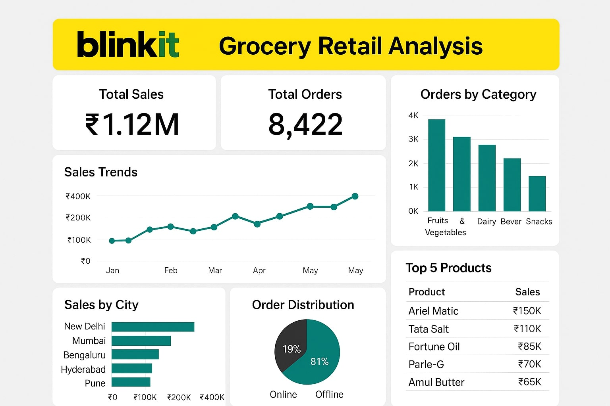
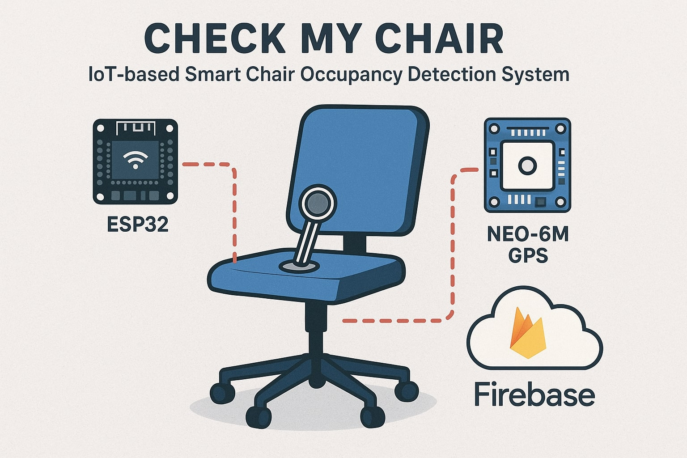
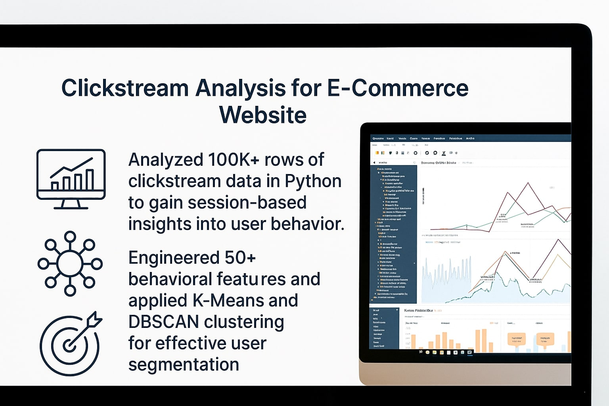

Education
B.Tech in Computer Science & Engineering (Specialization: Data Science)
Garden City University, Bangalore (2022–2026)
CGPA: 8.21/10
Experience
Data Visualization & Full Stack Web Development Intern
Alstom Transport India Ltd — August 2025 to November 2025
- Contributed to business reporting and analytics by creating interactive and automated dashboards.
- Prepared project documentation and performed requirement analysis for internal projects.
- Worked with Elasticsearch, Stream API, and SQL for data processing and search operations.
- Managed databases using MySQL Workbench, Sakila DB, and MariaDB, including writing and optimizing SQL queries.
- Developed backend modules using Flask and ASP.NET (C#); contributed to microservices and file upload APIs.
- Built responsive UI components using HTML5, Bootstrap, and implemented AJAX for asynchronous functionality.
My Skills
Programming & Tools
Python, SQL, Power BI, MS Excel, Git/GitHub, AWS
Libraries & Frameworks
Pandas, NumPy, Scikit-learn, Matplotlib, Seaborn
Data Analytics & Visualization
EDA, BI Dashboards, Data Cleaning, Statistical Analysis, Report Automation
Soft Skills
Design Thinking, Problem Solving, Communication, Self-Learning, Critical Thinking
Projects
Blinkit Grocery Retail Analysis Dashboard
Built an interactive Power BI dashboard to analyze Blinkit grocery data, deriving insights across sales, products, and outlet types using DAX and dynamic filters.
IoT-based Smart Chair Occupancy System
Engineered a smart-chair IoT solution with ESP32 and GPS to stream real-time, geotagged occupancy status to Firebase/Ubidots for remote monitoring.
E-Commerce Clickstream Analysis
Analyzed 100K+ clickstream data rows in Python, using K-Means/DBSCAN for user segmentation, which increased campaign CTR by 15%.